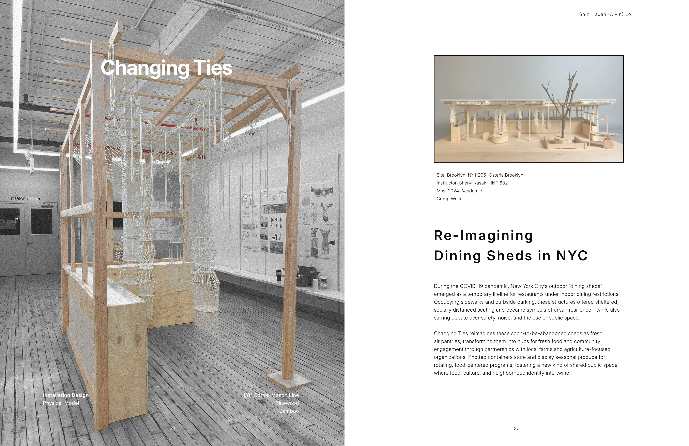
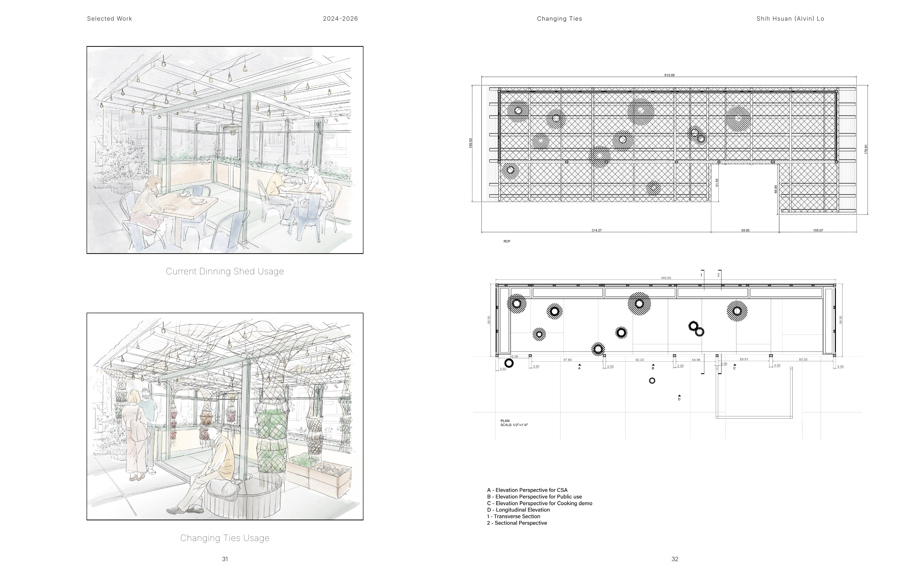
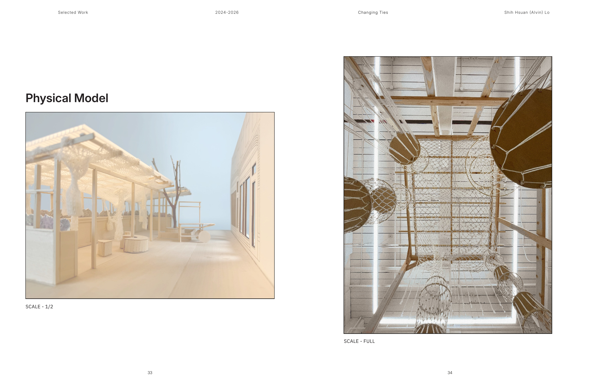
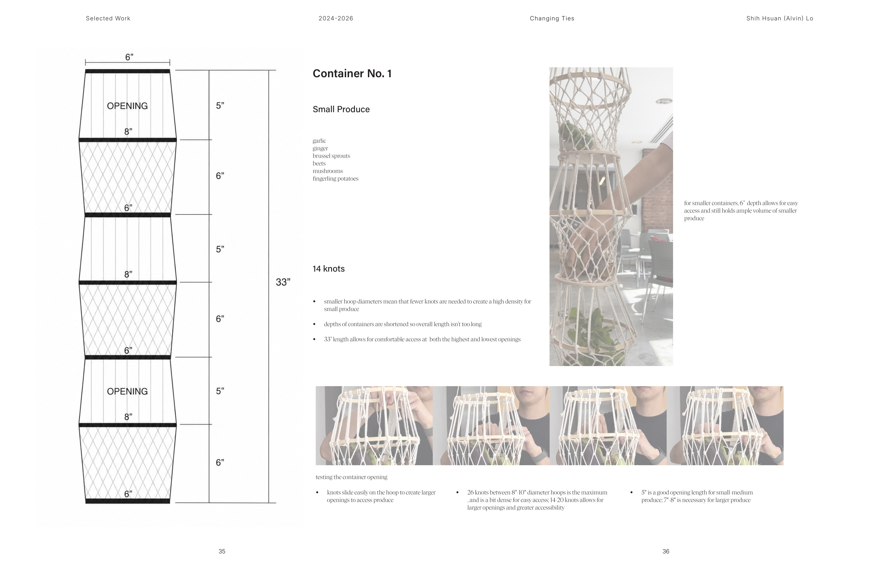
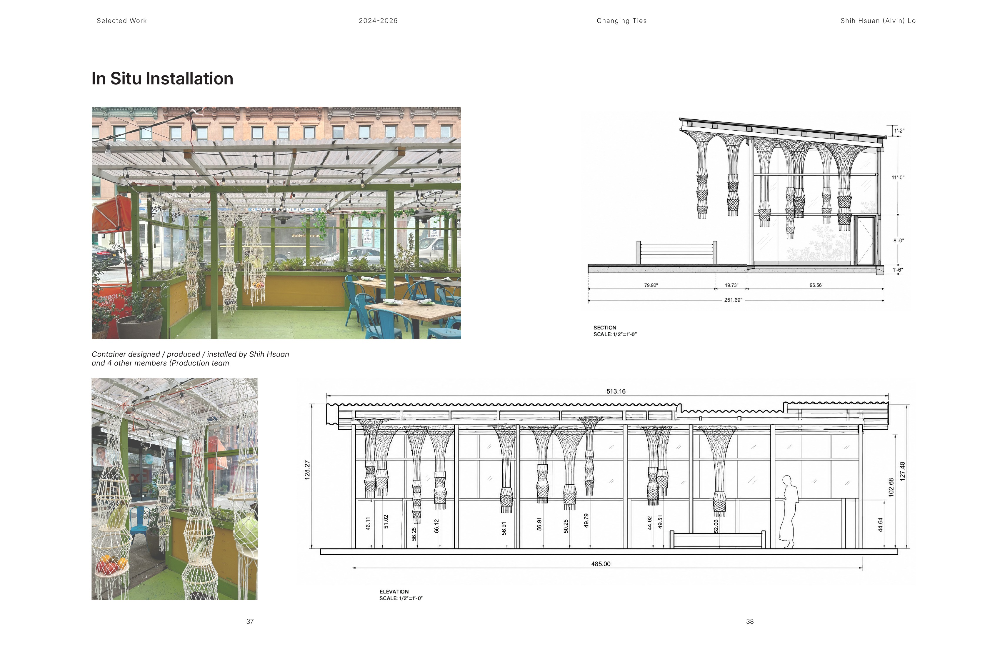

Changing Ties
Installation Design / INT-602 / Brooklyn, New York / Spring 2024
Changing Ties reimagines New York City dining sheds as fresh-air pantries: neighborhood spaces where seasonal produce, food-centered programming, and public life can share the same adaptable structure. Knotted cotton-line containers suspend from the existing shed frame, storing different types of produce while turning an infrastructure of temporary dining into a visible system of exchange.
Developed as group studio work for Osteria Brooklyn, the project moved between drawings, a half-scale model, full-scale fabrication, and an in-situ installation. The container system was designed, produced, and installed by Shih Hsuan (Alvin) Lo with four members of the production team.





